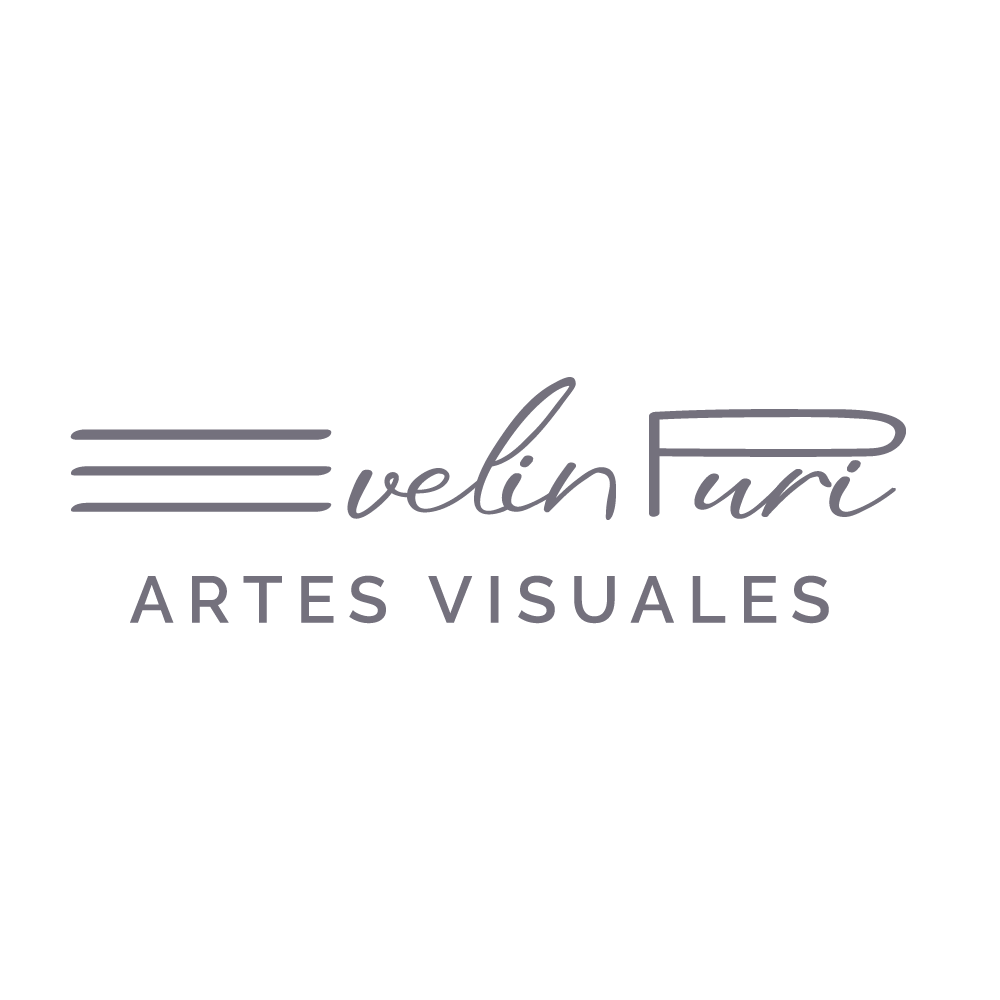
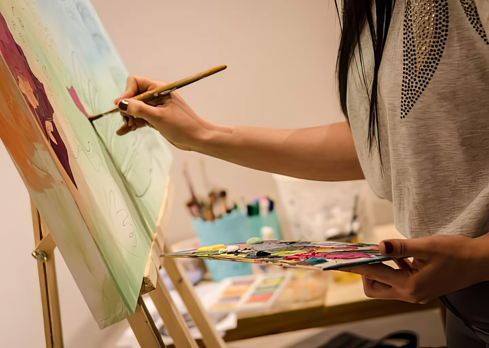
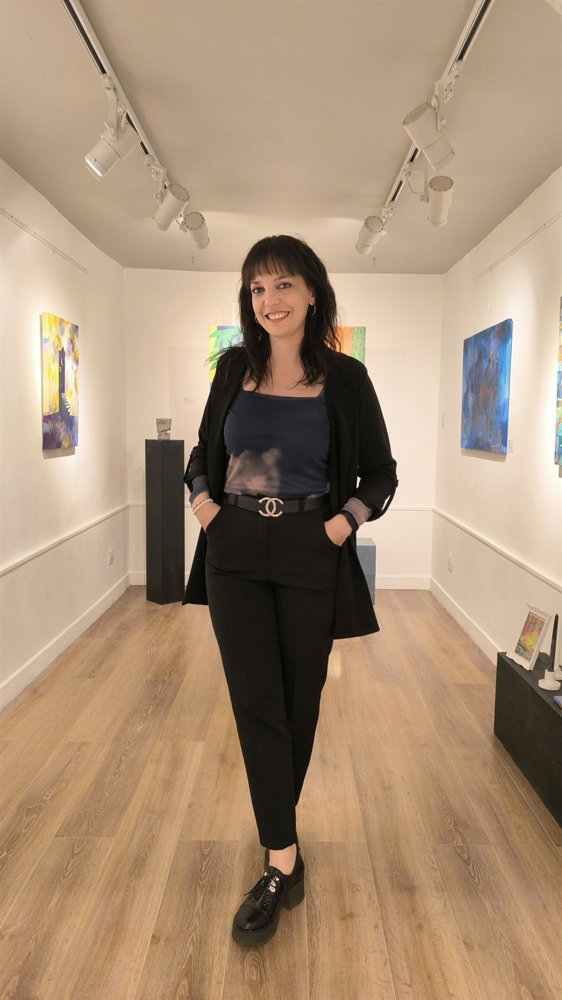
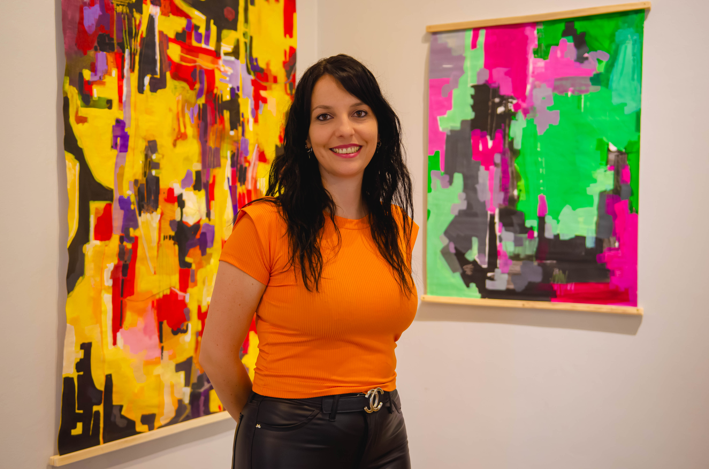

«La pintura contemporánea sobre bastidor transforma el espacio arquitectónico: capas de acrílico, pigmentos minerales y materia viva que construyen atmósferas de luz y silencio.»
DescubrirObras
Acrílicos y técnicas mixtas sobre bastidor de gran formato. Investigaciones cromáticas, gestos matéricos y resonancias arquitectónicas. Haz clic sobre cada obra para consultar su ficha curatorial completa.
El Color, la Materia y el Espacio

Detalle de producción: acrílico y técnica mixta sobre bastidorMi práctica nace desde el impulso del gesto y la densidad de la materia. Trabajo en el cruce entre la abstracción y la figuración, dejando que la mancha desde una búsqueda gestual y la pincelada intencionada convivan en una misma superficie.
El color no es un mero recurso descriptivo, sino el eje conceptual que guía la composición, generando atmósferas donde la luz y la sombra dialogan constantemente. Cada obra es la huella de un proceso plástico vivo: un universo pictórico autónomo que invita a descubrir capas de sentido a través de la materia y la sensibilidad cromática.
«Cada cuadro es una incisión en el silencio: un territorio donde la materia pictórica cobra vida en sintonía con la luz y la arquitectura.»— Evelin Puri • Artista Visual
Exposiciones & Distinciones
Selección de muestras individuales, participaciones en salones de artes visuales y proyectos comisionados.
Exposiciones y Proyectos Destacados
-
2025
A la sombra
Exposición individual
Espacio de Arte Luis Quesada – Nave UNCUYO (Mendoza). -
2024
Metamorfosis
Exposición individual
Galería de Arte Dorotheé (San Martín, Mendoza). -
2023
Danza Cósmica
Exposición individual e instalación
Centro Patrimonial y Artístico Cristóforo Colombo (Godoy Cruz, Mendoza). -
2023
Universos Silvestres
Exposición individual seleccionada por convocatoria.
Espacio de Arte de la Universidad Tecnológica Nacional (UTN) (Mendoza). -
2025
Mural Conmemorativo 150° Aniversario
Intervención mural a gran escala (36 m²)
Facultad de Ciencias Agrarias – UNCUYO (Luján de Cuyo, Mendoza).
Premios y Reconocimientos
-
2026
4° Premio (No Adquisición)
44° Salón de Pintura del Consejo Profesional de Ciencias Económicas (CPCE) (Mendoza).
Obra: "Salida de la caverna" (Acrílico y óleo pastel sobre tela, 2025). -
2025/2026
Selección Oficial
Salón Regional de Artes Visuales Vendimia 2025/2026
Espacio Contemporáneo de Arte (ECA) Eliana Molinelli (Mendoza).
Obra seleccionada: "Germinar" (Instalación / Objeto Arte). -
2025
Selección Oficial
II Certamen "Pascuas Croatas 2023"
Asociación Croatas de Mendoza. -
2023
Selección Oficial y Adquisición
Salón Nacional de Pintura "Juego de Damas"
Galería Artify (San Juan).
Obra: "A la sombra de nadie" (Adquirida). -
2023
Selección Oficial
II Certamen "Pascuas Croatas 2023"
Asociación Croatas de Mendoza. -
2013
1° Premio – Muralismo
Concurso de Arte Mural "30 Años de Democracia"
Municipalidad de la Ciudad de Mendoza. -
2013
1° Premio – Pintura
3° Concurso de Pintura y Dibujo al Aire Libre
Municipalidad de la Ciudad de Mendoza. -
2012
1° Premio – Muralismo
1° Concurso de Arte Mural Urbano para Alumnos
Municipalidad de la Ciudad de Mendoza.

Evelin Puri
Nací en Luján de Cuyo en 1990 y actualmente resido en la Ciudad de Mendoza, donde desarrollo mi práctica en la intersección entre la creación en taller, la docencia y la gestión cultural. Formada como Profesora de Grado Universitario en Artes Visuales por la Facultad de Artes y Diseño de la Universidad Nacional de Cuyo, mi etapa académica incluyó una beca de intercambio en Brasil (UNESP), experiencia que amplió mi mirada sobre el color y la materialidad.
Durante años me he desempeñado activamente en el ámbito institucional cultural, habiendo ejercido como curadora y responsable del Área de Artes Visuales y del Espacio de Arte Luis Quesada en la Nave UNCUYO, además de coordinar el programa de educación no formal Aulas para el Tiempo Libre de la misma casa de estudios. Esta trayectoria en la curaduría y el diseño expositivo nutrió mi comprensión sobre la relación entre la obra, la luz y la atmósfera del entorno que la acoge.
En el taller, mi producción explora el diálogo constante entre la figuración y la abstracción a través de la mancha expresiva, el gesto intencionado y el uso consciente de gamas cromáticas inspiradas en la sensibilidad del paisaje. En paralelo, me desempeño como Co-fundadora y Directora Creativa de un proyecto especializado en maquillaje artístico, caracterización y efectos especiales (FX) para producciones escénicas y eventos. Hoy vuelco todo este recorrido en una pintura de autor concebida como una presencia viva: piezas creadas desde la investigación plástica para dialogar de manera auténtica con los espacios y quienes los habitan.

Proyectos a Medida
Desarrollo de piezas únicas.
- Comisiones para Hogares y Espacios Corporativos (Encargos): Lienzos o murales en gran formato adaptados a las proporciones espaciales del cliente o estudio de interiorismo.
- Visitas al Taller y Encuentro con la Artista: Coordinación de visitas privadas para conocer el proceso, seleccionar paletas y definir proyectos.
- Asesoramiento Curatorial Personalizado: Integración de la pintura contemporánea en proyectos de arquitectura y diseño de interiores.
Inicie una Conversación
Para consultas de adquisición de obra disponible, cotización de proyectos a medida o para coordinar una visita a su estudio, complete el formulario a continuación.
Quinta Sección / Mendoza, Argentina